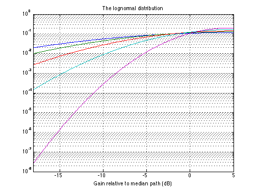

The lognormal distribution
Copyright 2007 Telecommunications Lab
mu50 = 4.5; sigma = 8; x=-18:0.1:6; %p = quad('(1/sqrt(2.*pi.*sigma))*exp(-x-(mu50/(2*sigma.^2)))', 0, 10); p8 = (1/sqrt(2.*pi.*sigma))*exp(-(x-mu50).^2/(2*sigma.^2)) sigma = 4; p4 = (1/sqrt(2.*pi.*sigma))*exp(-(x-mu50).^2/(2*sigma.^2)) sigma = 6; p6 = (1/sqrt(2.*pi.*sigma))*exp(-(x-mu50).^2/(2*sigma.^2)) sigma = 10; p10 = (1/sqrt(2.*pi.*sigma))*exp(-(x-mu50).^2/(2*sigma.^2)) sigma = 12; p12 = (1/sqrt(2.*pi.*sigma))*exp(-(x-mu50).^2/(2*sigma.^2)) semilogy(x, p12, x, p10, x, p8, x, p6, x, p4); grid on title('The lognormal distribution') xlabel('Gain relative to median path (dB)') axis([-18 5 0.001 0]) ylabel('Probability Gain is less than abscissa')